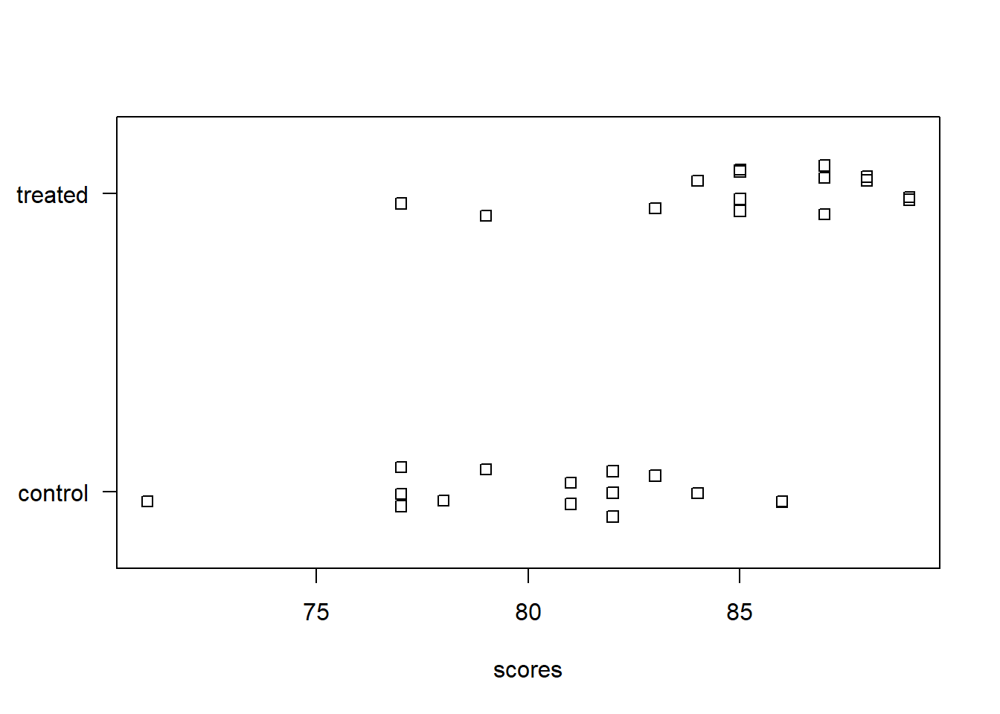
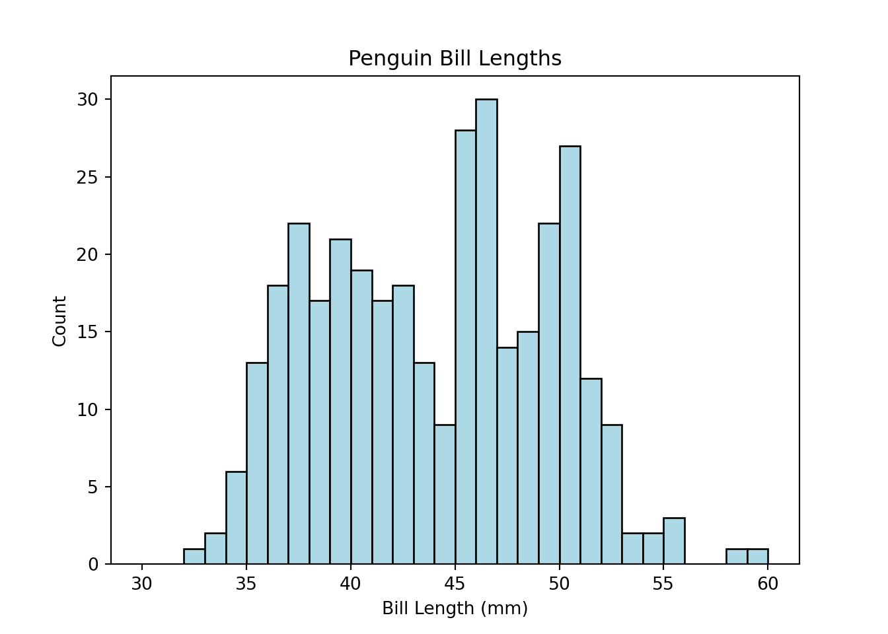

Chapter 8 Statistical Inference and Modeling
This chapter looks at performing and interpreting common statistical analyses.
8.1 Comparing group means
Comparing the means of two or more groups to assess if they differ in any meaningful way. Two group means are often analyzed with a t test. Three or more group means can be analyzed with the Analysis of Variance or ANOVA. Both the t test and ANOVA are special cases of a linear model.
To demonstrate the t test, we will examine fictitious data on 15 scores between two groups of subjects. The “control” group were tested as-is while the “treated” group experienced a particular intervention. Of interest is (1) whether or not the mean scores differ meaningfully between the treated and control groups, and (2) if they do differ, how are they different?
To demonstrate the ANOVA test, we’ll use data from The Analysis of Biological Data (3rd ed) on the mass of pine cones from three different environments in North America. Of interest is (1) whether or not the mean mass of pine cones differ meaningfully between the three locations, and (2) if they do differ, how are they different?
The first question in each scenario is often assessed with a hypothesis test and p-value. The null hypothesis is no difference between the means. The p-value is basically the probability of the observed differences between the groups (or more extreme differences) assuming the null hypothesis is true. A small p-value, traditionally less then 0.05, provides evidence against the null. For example, a p-value of 0.01 says there’s a 1% chance of sampling data as different as this (or more different) if there really was no difference between the groups. Note that p-values don’t tell you how two or more statistics differ. See the ASA Statement on p-values.
The second question in each scenario is assessed by calculating confidence intervals on the difference in means. This is more informative than a p-value. A confidence interval gives us information on the uncertainty, direction and magnitude of a difference in means. For example, a 95% confidence interval of [2, 15] tells us the data is consistent with a difference anywhere between 2 and 15 and that the mean of one group appears to be at least 2 units larger than the mean of the other group. Note that a 95% confidence interval does not mean there is a 95% probability that the true value is in the interval. The confidence interval either captured the true value or it did not. We don’t know. However the process of calculating the confidence interval works roughly 95% of the time.
Python
R
t-test
The str() function allows to take a quick look at the data frame ch8_d1. One column contains the scores, the other column indicates which group the subject was in (control vs treated).
> str(ch8_d1)
'data.frame': 30 obs. of 2 variables:
$ scores: num 77 81 77 86 81 77 82 83 82 79 ...
$ group : chr "control" "control" "control" "control" ...A stripchart is one of many ways to visualize numeric data between two groups. Here we use the base R function stripchart(). The formula scores ~ group says to plot scores by group. The las = 1 argument says to rotate the y-axis labels. The method = "jitter" arguments says to randomly scatter the points vertically so they don’t overplot. It appears the treated group had higher scores.
> stripchart(scores ~ group, data = ch8_d1, las = 1, method = "jitter")
To calculate the means between the two groups we can use the aggregate() function. Again the formula scores ~ group says to aggregate scores by group. We specify mean so that we calculate the mean between the two groups. Some other functions we could specify include median, sd, or sum. The sample mean of the treated group is about 5 points higher than the control group.
> aggregate(scores ~ group, data = ch8_d1, mean)
group scores
1 control 80.4
2 treated 85.2Is this difference meaningful? What if we took more samples? Would each sample result in similar differences in the means? A t test attempts to answer this.
The t.test() function accommodates formula notation allowing us to specify that we want to calculate mean scores by group.
> t.test(scores ~ group, data = ch8_d1)
Welch Two Sample t-test
data: scores by group
t = -3.5313, df = 27.445, p-value = 0.001482
alternative hypothesis: true difference in means between group control and group treated is not equal to 0
95 percent confidence interval:
-7.586883 -2.013117
sample estimates:
mean in group control mean in group treated
80.4 85.2 The p-value of 0.0015 is small, providing good evidence that the difference in means we witnessed reflects a real difference in the population. The confidence interval on the difference in means tells us the data is consistent with a difference between -7 and -2. It appears we can expect the control group to score at least 2 points lower than the treated group.
ANOVA
The str() function allows to take a quick look at the data frame ch8_d2. One column contains the mass of the pine cones, the other column indicates which location the pine cone was found.
> str(ch8_d2)
'data.frame': 16 obs. of 2 variables:
$ mass : num 9.6 9.4 8.9 8.8 8.5 8.2 6.8 6.6 6 5.7 ...
$ location: chr "1" "1" "1" "1" ...Again we use a stripchart to visualize the three groups of data. It appears the treated group had higher scores. It appears the pine cones in location 1 have a higher mass.
> stripchart(mass ~ location, data = ch8_d2, las = 1, method = "jitter")
To calculate the means between the three groups we can use the aggregate() function. Again the formula mass ~ location says to aggregate mass by location. We specify mean so that we calculate the mean between the three groups.
> aggregate(mass ~ location, data = ch8_d2, mean)
location mass
1 1 8.90
2 2 6.08
3 3 6.12Is this difference meaningful? ANOVA attempts to answer this.
The aov() function carries out the ANOVA test and also accommodates formula notation. It’s usually preferable to save the ANOVA result into an object and call summary() on the object.
> aov1 <- aov(mass ~ location, data = ch8_d2)
> summary(aov1)
Df Sum Sq Mean Sq F value Pr(>F)
location 2 29.404 14.702 50.09 7.79e-07 ***
Residuals 13 3.816 0.294
---
Signif. codes: 0 '***' 0.001 '**' 0.01 '*' 0.05 '.' 0.1 ' ' 1The small p-value of 0.0000007 provides strong evidence that the difference in means we witnessed reflects a real difference in the population.
Unlike the t.test() output, the aov() summary does not provide confidence intervals on differences in means. That’s because there are many kinds of differences we might want to assess. A common and easy procedure is Tukey’s Honestly Significant Differences (HSD), which computes differences between all possible pairs and returns adjusted p-values and confidence intervals to account for the multiple comparisons. Base R provides the TukeyHSD() for this task. Call it on the ANOVA object.
> TukeyHSD(aov1)
Tukey multiple comparisons of means
95% family-wise confidence level
Fit: aov(formula = mass ~ location, data = ch8_d2)
$location
diff lwr upr p adj
2-1 -2.82 -3.6862516 -1.9537484 0.0000028
3-1 -2.78 -3.6462516 -1.9137484 0.0000033
3-2 0.04 -0.8647703 0.9447703 0.9925198The difference in means between locations 2 and 1 (2 - 1) and locations 3 and 1 (3 - 1) are about -2.8. The difference in means between locations 3 and 2 (3 - 2) is inconclusive. It seems to be small but we’re not sure if the difference is positive or negative.
Both the t-test and ANOVA are special cases of the linear model (ie, regression). The same essential results can be obtained by using the lm() function. See the Linear Modeling section.
> m1 <- lm(scores ~ group, data = ch8_d1)
> summary(m1)
> m2 <- lm(mass ~ location, data = ch8_d2)
> summary(m2)8.2 Comparing group proportions
Comparing the proportions of two or more groups to see if or how they differ.
Python
R
8.3 linear modeling
Analyzing if or how the variability a numeric variable depends on one or more predictor variables.
Python
R
8.4 Logistic regression
Analyzing if or how the variability of a binary variable depends on one or more predictor variables.